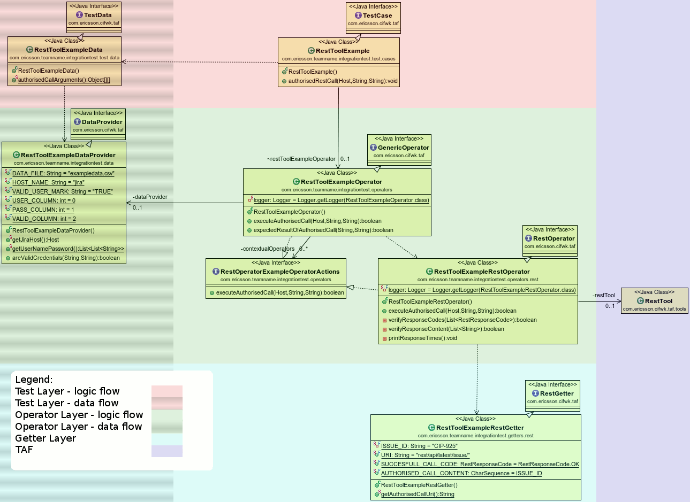

Rest Example is delivered as part of TAF archetype (you can get it using mvn command: )
mvn archetype:generate -DarchetypeCatalog=https://arm1s11-eiffel004.eiffel.gic.ericsson.se:8443/nexus/content/repositories/snapshots/archetype-catalog.xml
Goal of this example is to document the way of using RestTool in test cases.

Left part of class diagram shows the data flow and right part shows the logic flow.
Top layer is Test layer - it is not shared between teams and does not contain "business" logic - doesn't define how to operate on System.
Middle layer is Operator - it is shared between the teams inside taf-tor-operators project. It contains all the business logic required to execute actions on System. It contains both generic and contextual Operators and Data Provider to fetch data from the system.
Lowest layer contains mappings of points exposed by SUT. This layer is shared between the teams and is created to easily manage changes of SUT.
RestTool is containing System Under Test using some implementation of rest tool (e.g. JMeter or cURL).
{kind=link}
{kind=link}
{kind=link}